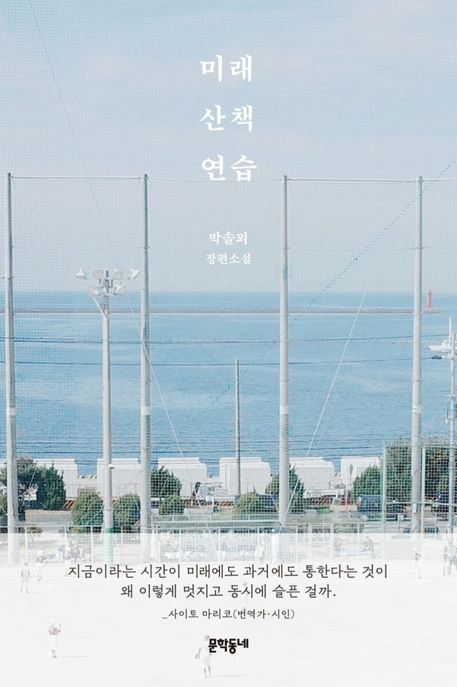

미래 산책 연습
17쪽
그러나 빗나갈 것을 생각하지 않고 그것이 정해진
미래라고 우리는 미래에 마주앉아 서로의 이야기를
듣게 될 것이라고 그것을 여러 번 반복하여 익히고
걸치고 입어버리면 나는 그 순간을 어느 순간 겪어버릴지 모른다.
미래에 익숙해지고 미래를 손에 만져본 적이 있는 사람으로
살아갈 수 있을 것이다.
그러고 나서는 문을 열고 나가 하던 일을 가던 길을 이어나갈 것이다.
51쪽
어디에서는 무엇이 보이고 또 그곳에서는 다른 것이 보이고
무언가를 보기 위해 높은 곳에 오르고 숨기 위해 창문을 닫고 몸을 숙인다.
그런데 어떤 장면은 아무것도 남지 않는다. 그런 것은 찍을 수도 찍힐 수도 없었다.
보는 사람은 있었을까 그것조차 알 수 없다.
하지만 어디서 누가 무엇을 보고 있었을지 아무도 보지 못한 것이
나중에 무엇을 남기는지 우리는 결코 확신할 수 없을 것이다.
92쪽
그들이 반복한 것은 그때 그들이 그곳에 있었다면이 아니라
그때 그곳에 누군가 있었다는 돌이킬 수 없는 과거의 사실일 것이다.
112쪽
하지만 우리가 정말로 마주앉는다면 각자의 손을 내려다보던
고개를 들어 서로를 마주본다면 그때 우리가 할 수 있는 말이 아무것도 없을까.
그럴 수는 없다.
117쪽~118쪽
어렵고 긴 아파트 이름을 지나고 밤의 가로수는
당신은 다른 삶의 한가운데로 향하고 있다고 말하고 있었고
봄이 되면 이 주변에는 벚꽃이 핀다는 이야기를 들었고 꽃이 피지 않아도 충분히 좋아요.